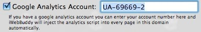

iWeb Buddy -- How Do I Do That?


Listed below are some of the more common questions asked or the non-obvious configurations in iWeb Buddy. If you have a question that is not on this list, please email us.
How Do I Install Mint on my .Mac account?
The short answer to this question is -- You Can’t. dotMac does not support server side coding like PHP which is required to use Mint.
However, it is possible to use Mint with a website hosted on .mac. Unfortunately it is non-trivial.
If you look at the source code for this webpage, you will see a script tag for Mint that points to http://zarrastudios.com. Note that there is no www in front of the domain name in that URL. This is what allows us to use Mint while hosting the actual webpages on dotMac.
When you use your personal domain name with a dotMac account, you are actually only pointing the www domain name to .mac. Any other “sub” domain will still point to wherever you want it. And the base domain name (in our case zarrastudios.com) will still point to wherever you previously configured it. In our case, we have another server on the internet that receives any requests for http://zarrastudios.com even though the address of http://www.zarrastudios.com actually sends you to http://web.mac.com. This allows us to configure Mint inside of iWeb Buddy as follows:

Notice the lack of a www in that URL. Now, once iWeb Buddy has updated the webpage, the following happens when a user goes to one of our pages.

A user comes to our website and actually hits the dotMac servers. dotMac sends the webpage, graphics, etc. back to the client browser. When the client browser processes the html code it sees the Javascript for Mint and goes to http://zarrastudios.com and posts the statistics for that “hit”.
And that is it. While Mint is a fantastic web stats tracking package, it does require a non-dotMac server to run on. If you have this configuration then you can probably set up your website with Mint. If you do not have access to another server then you will probably be better off using Google’s Analytics or one of the other non-server based stats packages.
Connecting your .Mac website to Google’s Analytics is only a couple of mouse clicks away. First, you need to get a little bit of information from Google and more specifically your Analytics Account.
After logging into analytics, select the profile you want to use with your .Mac website and click edit. On the next page select Check Status in the upper right corner.
On this third page, you will see the scripts that Google wants you to include in every page on your website. With iWeb Buddy that script is already included and only needs you to give it the account number. The account number is buried in the script code as seen here:

With that account number in hand, open iWeb Buddy and select the Domain (or site or page(s)) that you want tracked via Google’s Analytics and then click on the settings button in the Toolbar. In the settings sheet find the Google Analytics text field and input that account number. Be sure that the check box is selected as well.

And that is it! Now, whenever you update that Domain, Site and/or Page(s); iWeb Buddy will automatically insert the Google Analytics code for you.
©2007-2008 Zarra Studios LLC. All rights reserved.